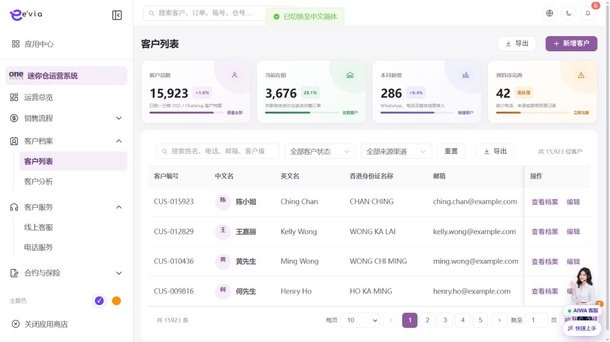

客户档案 PRD
下载 Word 文档客户档案 PRD
运营后台研发详细需求规格 · V2.2 · 2026-09-09
1 文档目标与范围
建立统一客户主档，集中呈现身份、联系方式、授权、标签和线索至付款的业务关系。 本文档明确页面字段、操作流程、业务规则、跨端契约、权限和验收条件。
| 属性 | 内容 |
|---|---|
| 文档编号 | OS-OPS-PRD-10 |
| 产品基线 | AiwaBot产品原型 V3.2 与 OneStorage运营后台原型 V1.1 |
| 版本 | V2.2 2026-09-09 |
1.1 原型界面依据
本模块界面直接取自 AiwaBot产品原型-v3.2.html。真实截图及功能点对应说明见“界面与功能对应说明”。
2 界面与页面结构
2.1 界面与功能对应说明
以下真实原型截图用于确定页面区域、入口和交互位置；字段校验、状态变化和服务端处理以本PRD功能规格为准。

| 说明项 | 界面辅助说明 |
|---|---|
| 对应功能点 | OS-OPS-PRD-10-FP01 新增客户；OS-OPS-PRD-10-FP02 编辑资料；OS-OPS-PRD-10-FP03 管理标签；OS-OPS-PRD-10-FP04 新增备注；OS-OPS-PRD-10-FP05 合并客户 |
| 页面区域 | 客户档案列表与筛选由查询条件、结果列表、状态标识、行级操作和分页区组成。 |
| 交互要求 | 查询条件可组合、重置并在返回时保留；列表与导出共用同一数据范围；按钮依据权限、状态和allowedActions显示。 |
| 状态与权限 | 动作由allowedActions控制；无权限隐藏入口，接口仍执行403校验并记录审计。 |
2.3 筛选条件
| 筛选项 | 规则 |
|---|---|
| 姓名、电话、邮箱或客户编号 | 支持组合查询、重置和返回保留。 |
| 客户类型 | 支持组合查询、重置和返回保留。 |
| 标签 | 支持组合查询、重置和返回保留。 |
| 店铺 | 支持组合查询、重置和返回保留。 |
| 团队 | 支持组合查询、重置和返回保留。 |
| 负责人 | 支持组合查询、重置和返回保留。 |
| 状态 | 支持组合查询、重置和返回保留。 |
3 列表字段规格
>| 字段ID | 字段 | 来源 | 展示与交互规则 |
|---|---|---|---|
| OS-OPS-PRD-10-L01 | 客户编号 | 服务端主键或业务编号 | 完整展示并支持复制；唯一且不可使用展示名称代替。 |
| OS-OPS-PRD-10-L02 | 中文名 | 业务主域 | 详情与导出保持一致；空值显示—，不使用模拟值补齐。 |
| OS-OPS-PRD-10-L03 | 英文名 | 业务主域 | 详情与导出保持一致；空值显示—，不使用模拟值补齐。 |
| OS-OPS-PRD-10-L04 | 香港身份证名称 | 业务主域 | 详情与导出保持一致；空值显示—，不使用模拟值补齐。 |
| OS-OPS-PRD-10-L05 | 邮箱 | 业务主域 | 详情与导出保持一致；空值显示—，不使用模拟值补齐。 |
| OS-OPS-PRD-10-L06 | 联系方式 | 业务主域 | 详情与导出保持一致；空值显示—，不使用模拟值补齐。 |
| OS-OPS-PRD-10-L07 | 来源渠道 | 业务主域 | 详情与导出保持一致；空值显示—，不使用模拟值补齐。 |
| OS-OPS-PRD-10-L08 | 客户类型 | 业务主域 | 详情与导出保持一致；空值显示—，不使用模拟值补齐。 |
| OS-OPS-PRD-10-L09 | 所属店铺 | 组织或门店主数据 | 显示名称并保留ID；数据范围变化后重新校验。 |
| OS-OPS-PRD-10-L10 | 所属团队 | 组织或门店主数据 | 显示名称并保留ID；数据范围变化后重新校验。 |
| OS-OPS-PRD-10-L11 | 客户标签 | 业务主域 | 详情与导出保持一致；空值显示—，不使用模拟值补齐。 |
| OS-OPS-PRD-10-L12 | 最近联系 | 业务主域 | 详情与导出保持一致；空值显示—，不使用模拟值补齐。 |
| OS-OPS-PRD-10-L13 | 负责人 | 服务端/关联主数据 | 显示姓名，离职或停用账号保留历史名称。 |
| OS-OPS-PRD-10-L14 | 状态 | 服务端/关联主数据 | 以标签显示服务端枚举；不可由前端自行推导。 |
| OS-OPS-PRD-10-L15 | 操作 | 服务端/关联主数据 | 根据allowedActions显示查看、编辑及状态动作；后端再次鉴权。 |
4 新增与编辑表单
| 字段ID | 字段 | 控件 | 必填 | 校验与保存规则 |
|---|---|---|---|---|
| OS-OPS-PRD-10-F01 | 客户编号 | 只读文本 | 系统生成 | 首次保存时由服务端生成；后续只读，并作为跨端客户主键。 |
| OS-OPS-PRD-10-F02 | 中文名 | 文本框 | 条件必填 | 去除首尾空格；保存原始值与标准化值。 |
| OS-OPS-PRD-10-F03 | 英文名 | 文本框 | 条件必填 | 去除首尾空格；保存原始值与标准化值。 |
| OS-OPS-PRD-10-F04 | 香港身份证名称 | 文本框 | 条件必填 | 去除首尾空格；保存原始值与标准化值。 |
| OS-OPS-PRD-10-F05 | 手机号码 | 区号加电话号码 | 必填 | 保存标准化E.164值；香港号码按8位校验。 |
| OS-OPS-PRD-10-F06 | 邮箱 | 邮箱输入 | 选填 | 格式校验并转小写保存检索值。 |
| OS-OPS-PRD-10-F07 | 来源渠道 | 单选或下拉选择 | 必填 | 选项来自服务端字典；提交编码值，界面显示名称。 |
| OS-OPS-PRD-10-F08 | 客户类型 | 单选或下拉选择 | 必填 | 选项来自服务端字典；提交编码值，界面显示名称。 |
| OS-OPS-PRD-10-F09 | 负责人 | 单选或下拉选择 | 必填 | 选项来自服务端字典；提交编码值，界面显示名称。 |
| OS-OPS-PRD-10-F10 | 客户标签 | 文本框 | 条件必填 | 去除首尾空格；保存原始值与标准化值。 |
| OS-OPS-PRD-10-F11 | 所属店铺 | 单选或下拉选择 | 必填 | 选项来自服务端字典；提交编码值，界面显示名称。 |
| OS-OPS-PRD-10-F12 | 所属团队 | 单选或下拉选择 | 必填 | 选项来自服务端字典；提交编码值，界面显示名称。 |
| OS-OPS-PRD-10-F13 | 地区偏好 | 单选或下拉选择 | 必填 | 选项来自服务端字典；提交编码值，界面显示名称。 |
| OS-OPS-PRD-10-F14 | 存放物品 | 文本框 | 条件必填 | 去除首尾空格；保存原始值与标准化值。 |
| OS-OPS-PRD-10-F15 | 租期偏好 | 数字输入 | 条件必填 | 仅允许业务配置范围内的整数；服务端再次校验。 |
| OS-OPS-PRD-10-F16 | 预算 | 金额输入 | 条件必填 | 输入大于等于0，最多两位小数；服务端以最小货币单位重算。 |
| OS-OPS-PRD-10-F17 | 营销授权 | 文本框 | 条件必填 | 去除首尾空格；保存原始值与标准化值。 |
| OS-OPS-PRD-10-F18 | 备注 | 多行文本 | 条件必填 | 最多500字；拒绝或异常原因不得只输入空白。 |
5 功能点详细设计
| 功能编号 | 功能点 | 目标 |
|---|---|---|
| OS-OPS-PRD-10-FP01 | 新增客户 | 先按手机号、邮箱和证件摘要查重，生成客户编号。 |
| OS-OPS-PRD-10-FP02 | 编辑资料 | 敏感字段变更记录前后值摘要并触发必要复核。 |
| OS-OPS-PRD-10-FP03 | 管理标签 | 标签来源区分人工、规则和AI，不允许同名重复。 |
| OS-OPS-PRD-10-FP04 | 新增备注 | 记录可见范围和附件，禁止覆盖历史备注。 |
| OS-OPS-PRD-10-FP05 | 合并客户 | 预览冲突字段和关联对象，审批后执行可回溯合并。 |
5.1 新增客户
功能编号：OS-OPS-PRD-10-FP01
功能目的：先按手机号、邮箱和证件摘要查重，生成客户编号。
使用角色与入口：具备本模块创建权限的运营人员；从模块列表右上角新增入口或关联对象快捷入口进入。入口显示前校验菜单、动作和数据范围。
前置条件：用户登录有效并具备创建或批量权限；关联主数据有效且属于dataScope；页面已加载最新字典、业务配置和allowedActions。
界面操作：打开新增界面，按页面分组录入客户编号、中文名、英文名、香港身份证名称、手机号码、邮箱、来源渠道、客户类型、负责人、客户标签、所属店铺、所属团队；关联对象使用检索选择。点击保存前完成字段级和跨字段校验。
系统处理：服务端使用clientRequestId幂等校验，在事务内生成业务编号、主对象、初始状态和审计记录；事务提交后发布领域事件。先按手机号、邮箱和证件摘要查重，生成客户编号。
业务规则：订单、合同、保单保存客户快照但仍关联主档；已产生交易的客户不得物理删除。服务端必须重复校验。
成功结果：页面提示“新增客户成功”，刷新对象状态、version、allowedActions、关联对象和时间线；如产生异步任务，同时显示任务编号和进度入口。
异常与恢复：400保留输入；403拒绝并审计；409要求刷新；超时按clientRequestId查询；部分成功显示明细和补偿入口。
跨端影响：客户小程序只能读取和修改允许自助维护的本人字段；接收端打开后重新鉴权并回源。
验收条件：在允许状态下完成新增客户时仅产生一次预期数据变化和一次审计记录；越权、错误状态、重复提交及版本冲突均不得产生重复对象或越级状态。
5.2 编辑资料
功能编号：OS-OPS-PRD-10-FP02
功能目的：敏感字段变更记录前后值摘要并触发必要复核。
使用角色与入口：运营管理员或该配置项负责人；从列表右上角管理入口或详情页编辑入口进入。入口显示前校验菜单、动作和数据范围。
前置条件：用户登录有效；目标对象存在且属于用户dataScope；当前状态包含该动作；页面持有最新version和allowedActions。涉及金额、库存、附件或第三方结果时必须回源确认。
界面操作：打开编辑界面并显示当前version，维护客户编号、中文名、英文名、香港身份证名称、手机号码、邮箱、来源渠道、客户类型、负责人、客户标签、所属店铺、所属团队；受引用字段变更时展示影响对象，保存前确认生效范围。
系统处理：服务端以expectedVersion执行并发控制，校验引用关系和生效时间；保存新版本并记录变更前后值。敏感字段变更记录前后值摘要并触发必要复核。
业务规则：手机号标准化后唯一性检查；证件号加密存储且列表不展示原文。服务端必须重复校验。
成功结果：页面提示“编辑资料成功”，刷新对象状态、version、allowedActions、关联对象和时间线；如产生异步任务，同时显示任务编号和进度入口。
异常与恢复：400保留输入；403拒绝并审计；409要求刷新；超时按clientRequestId查询；部分成功显示明细和补偿入口。
跨端影响：AIWA会话、线索、预约、订单和工单按客户编号归档；接收端打开后重新鉴权并回源。
验收条件：在允许状态下完成编辑资料时仅产生一次预期数据变化和一次审计记录；越权、错误状态、重复提交及版本冲突均不得产生重复对象或越级状态。
5.3 管理标签
功能编号：OS-OPS-PRD-10-FP03
功能目的：标签来源区分人工、规则和AI，不允许同名重复。
使用角色与入口：当前对象负责人、被分派执行人或获授权管理员；从列表行操作、详情页主操作区或待办入口进入。入口显示前校验菜单、动作和数据范围。
前置条件：用户登录有效；目标对象存在且属于用户dataScope；当前状态包含该动作；页面持有最新version和allowedActions。涉及金额、库存、附件或第三方结果时必须回源确认。
界面操作：在详情页执行管理标签，填写或核对客户编号、客户类型、负责人、客户标签、所属店铺、备注、状态；界面随步骤显示当前节点、下一步和可撤回条件。
系统处理：服务端调用POST /ops/v1/customers/{id}/actions/{action}，校验权限、当前状态、expectedVersion和业务不变量，在事务中写入状态及时间线。标签来源区分人工、规则和AI，不允许同名重复。
业务规则：手机号标准化后唯一性检查；证件号加密存储且列表不展示原文。服务端必须重复校验。
成功结果：页面提示“管理标签成功”，刷新对象状态、version、allowedActions、关联对象和时间线；如产生异步任务，同时显示任务编号和进度入口。
异常与恢复：400保留输入；403拒绝并审计；409要求刷新；超时按clientRequestId查询；部分成功显示明细和补偿入口。
跨端影响：内部工单小程序仅显示履约所需的最小客户信息；接收端打开后重新鉴权并回源。
验收条件：在允许状态下完成管理标签时仅产生一次预期数据变化和一次审计记录；越权、错误状态、重复提交及版本冲突均不得产生重复对象或越级状态。
5.4 新增备注
功能编号：OS-OPS-PRD-10-FP04
功能目的：记录可见范围和附件，禁止覆盖历史备注。
使用角色与入口：具备本模块创建权限的运营人员；从模块列表右上角新增入口或关联对象快捷入口进入。入口显示前校验菜单、动作和数据范围。
前置条件：用户登录有效并具备创建或批量权限；关联主数据有效且属于dataScope；页面已加载最新字典、业务配置和allowedActions。
界面操作：打开新增界面，按页面分组录入客户编号、中文名、英文名、香港身份证名称、手机号码、邮箱、来源渠道、客户类型、负责人、客户标签、所属店铺、所属团队；关联对象使用检索选择。点击保存前完成字段级和跨字段校验。
系统处理：服务端使用clientRequestId幂等校验，在事务内生成业务编号、主对象、初始状态和审计记录；事务提交后发布领域事件。记录可见范围和附件，禁止覆盖历史备注。
业务规则：手机号标准化后唯一性检查；证件号加密存储且列表不展示原文。服务端必须重复校验。
成功结果：页面提示“新增备注成功”，刷新对象状态、version、allowedActions、关联对象和时间线；如产生异步任务，同时显示任务编号和进度入口。
异常与恢复：400保留输入；403拒绝并审计；409要求刷新；超时按clientRequestId查询；部分成功显示明细和补偿入口。
跨端影响：客户小程序只能读取和修改允许自助维护的本人字段；接收端打开后重新鉴权并回源。
验收条件：在允许状态下完成新增备注时仅产生一次预期数据变化和一次审计记录；越权、错误状态、重复提交及版本冲突均不得产生重复对象或越级状态。
5.5 合并客户
功能编号：OS-OPS-PRD-10-FP05
功能目的：预览冲突字段和关联对象，审批后执行可回溯合并。
使用角色与入口：当前对象负责人、被分派执行人或获授权管理员；从列表行操作、详情页主操作区或待办入口进入。入口显示前校验菜单、动作和数据范围。
前置条件：用户登录有效；目标对象存在且属于用户dataScope；当前状态包含该动作；页面持有最新version和allowedActions。涉及金额、库存、附件或第三方结果时必须回源确认。
界面操作：在详情页执行合并客户，填写或核对客户编号、客户类型、负责人、客户标签、所属店铺、备注、状态；界面随步骤显示当前节点、下一步和可撤回条件。
系统处理：服务端调用POST /ops/v1/customers/{id}/actions/{action}，校验权限、当前状态、expectedVersion和业务不变量，在事务中写入状态及时间线。预览冲突字段和关联对象，审批后执行可回溯合并。
业务规则：订单、合同、保单保存客户快照但仍关联主档；已产生交易的客户不得物理删除。服务端必须重复校验。
成功结果：页面提示“合并客户成功”，刷新对象状态、version、allowedActions、关联对象和时间线；如产生异步任务，同时显示任务编号和进度入口。
异常与恢复：400保留输入；403拒绝并审计；409要求刷新；超时按clientRequestId查询；部分成功显示明细和补偿入口。
跨端影响：AIWA会话、线索、预约、订单和工单按客户编号归档；接收端打开后重新鉴权并回源。
验收条件：在允许状态下完成合并客户时仅产生一次预期数据变化和一次审计记录；越权、错误状态、重复提交及版本冲突均不得产生重复对象或越级状态。
6 状态机与业务规则
| 对象 | 状态流转 |
|---|---|
| 客户档案 | 潜在客户→活跃客户→在租客户→历史客户；正常/冻结/待合并 |
| 异步任务 | 待执行→执行中→成功/失败→重试/人工处理 |
| 规则ID | 业务规则 |
|---|---|
| OS-OPS-PRD-10-R01 | 手机号标准化后唯一性检查 |
| OS-OPS-PRD-10-R02 | 证件号加密存储且列表不展示原文 |
| OS-OPS-PRD-10-R03 | 订单、合同、保单保存客户快照但仍关联主档 |
| OS-OPS-PRD-10-R04 | 营销触达必须校验授权渠道和撤回时间 |
| OS-OPS-PRD-10-R05 | 已产生交易的客户不得物理删除 |
| OS-OPS-PRD-10-R06 | 所有写请求携带clientRequestId和expectedVersion，重复请求返回首次结果 |
| OS-OPS-PRD-10-R07 | 服务端返回allowedActions，前端仅据此展示按钮，后端仍逐动作鉴权 |
| OS-OPS-PRD-10-R08 | 列表、详情、关联选择器、统计和导出使用同一数据范围 |
| OS-OPS-PRD-10-R09 | 创建、编辑、状态流转、导出、下载和审批均记录操作审计 |
| OS-OPS-PRD-10-R10 | 第三方调用失败不得伪装主业务成功，进入可重试或人工处理状态 |
7 业务处理链路
配置和治理操作使用审批、发布和版本管理
下游状态变化通过领域事件处理
批量和异步任务提供状态与失败明细
8 跨端交互规则
| 规则ID | 交互规则 |
|---|---|
| OS-OPS-PRD-10-X01 | 客户小程序只能读取和修改允许自助维护的本人字段 |
| OS-OPS-PRD-10-X02 | AIWA会话、线索、预约、订单和工单按客户编号归档 |
| OS-OPS-PRD-10-X03 | 内部工单小程序仅显示履约所需的最小客户信息 |
客户小程序仅访问本人数据，工单小程序仅访问本人或团队任务
深链打开后重新校验身份、权限和最新状态
金额、库存、状态和allowedActions必须回源
离线重试沿用同一clientRequestId
9 接口与事件契约
| 契约 | 路径或事件 | 要求 |
|---|---|---|
| 列表 | GET /ops/v1/customers | 分页、排序、筛选、数据范围和脱敏 |
| 详情 | GET /ops/v1/customers/{id} | version、关联对象、时间线和allowedActions |
| 新增 | POST /ops/v1/customers | clientRequestId幂等 |
| 编辑 | PATCH /ops/v1/customers/{id} | expectedVersion并发控制 |
| 动作 | POST /ops/v1/customers/{id}/actions/{action} | 动作级权限和状态前置 |
| 事件 | 客户档案.Changed.v1 | eventId、aggregateId、version和occurredAt |
10 异常与边界处理
| 场景 | 处理 |
|---|---|
| 400字段错误 | 字段级提示并保留输入 |
| 403无权限 | 拒绝并记录审计 |
| 404不存在 | 不泄露额外对象信息 |
| 409版本冲突 | 刷新后重新操作 |
| 重复请求 | 返回首次幂等结果 |
| 第三方失败 | 进入重试或人工处理 |
11 验收标准
| 验收ID | 验收条件 |
|---|---|
| OS-OPS-PRD-10-AC01 | 列表字段、筛选、分页、排序和导出一致 |
| OS-OPS-PRD-10-AC02 | 表单字段、必填和跨字段校验完整 |
| OS-OPS-PRD-10-AC03 | 所有动作同时校验权限、数据范围和状态 |
| OS-OPS-PRD-10-AC04 | 重复请求无重复记录或副作用 |
| OS-OPS-PRD-10-AC05 | 跨端编号、状态、金额和时间一致 |
| OS-OPS-PRD-10-AC06 | 异常和空数据有明确反馈 |
| OS-OPS-PRD-10-AC07 | 敏感字段按权限脱敏并审计 |
| OS-OPS-PRD-10-AC08 | P0规则具有自动化测试 |